How to Adult marketing review
Independent visual review passed for all 20 iPhone/iPad images. Mac remains pending. Review status · File verification
20 composed JPEGs across 2 complete ten-image galleries. Every app image comes from the capture platform shown in its gallery. Click any image for its full size.
Native base revision ab95cedbe7401da1f11f52e5befeafbc0b04848d
Build reference native-inputs-python-sorted-files-json-sha256:45c558b118e8813b7bad781f7e24538a395cff2ccffb8fd14b4f797f739f8c6e
Source hashes, native capture details and layout transforms
iphone-6.9
Open contact sheet
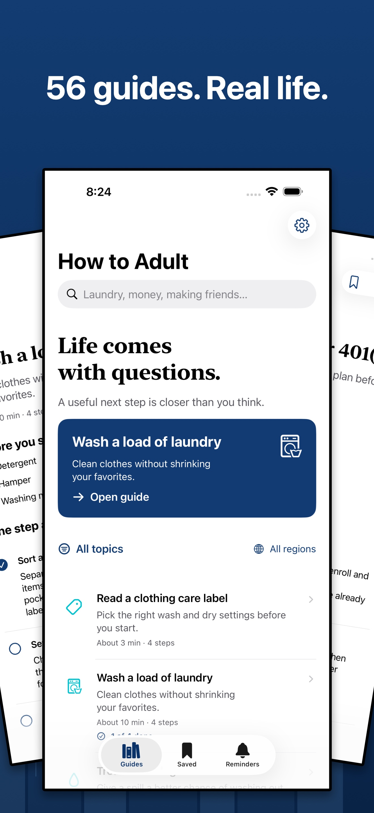
01-practical-guides
56 guides. Real life.
1320 × 2868, 472467 bytes, sRGB
marineSpines
iphone-6.9-02-guide, iphone-6.9-07-money, iphone-6.9-01-guides
SHA-256 71636f7701a617dcf39058ad65e7a518937daba951842dd917b68dcf4555a9ca
Original native captures
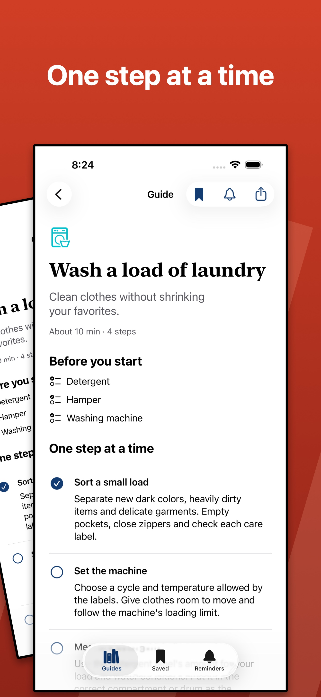
02-clear-steps
One step at a time
1320 × 2868, 470023 bytes, sRGB
vermilionBookmarks
iphone-6.9-02-guide, iphone-6.9-03-steps
SHA-256 d1582029bab4dc75822b599782c9078727d61cb74d9aec1353015509666380ec
Original native captures
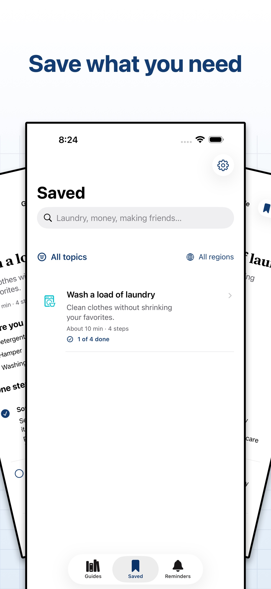
03-saved-guides
Save what you need
1320 × 2868, 322163 bytes, sRGB
whiteReferenceGrid
iphone-6.9-03-steps, iphone-6.9-02-guide, iphone-6.9-05-saved
SHA-256 1450441aa18a41a304b7721604e19e8a3aaf38accc5bca666df5ec188f1ef0b8
Original native captures
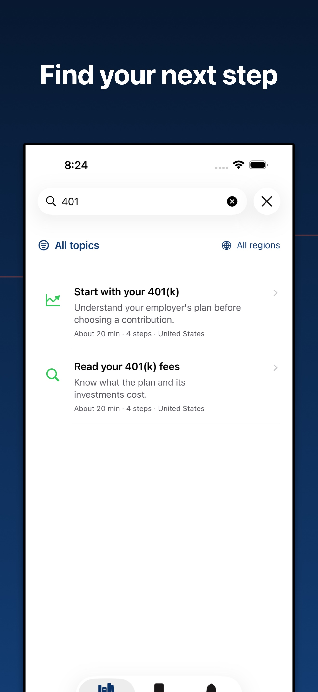
04-search
Find your next step
1320 × 2868, 273054 bytes, sRGB
navyWayfinding
iphone-6.9-06-search
SHA-256 a4285478c5aef8226af4630e154f37c54336e6dff8ce930e7d09abb7751f96cf
Original native captures
05-us-money
US money basics, explained
1320 × 2868, 514388 bytes, sRGB
marineSpines
iphone-6.9-06-search, iphone-6.9-07-money
SHA-256 8af44220e05a5511e607c33f55aacf6ffeef2b78d44addb7e72878ec46175564
Original native captures
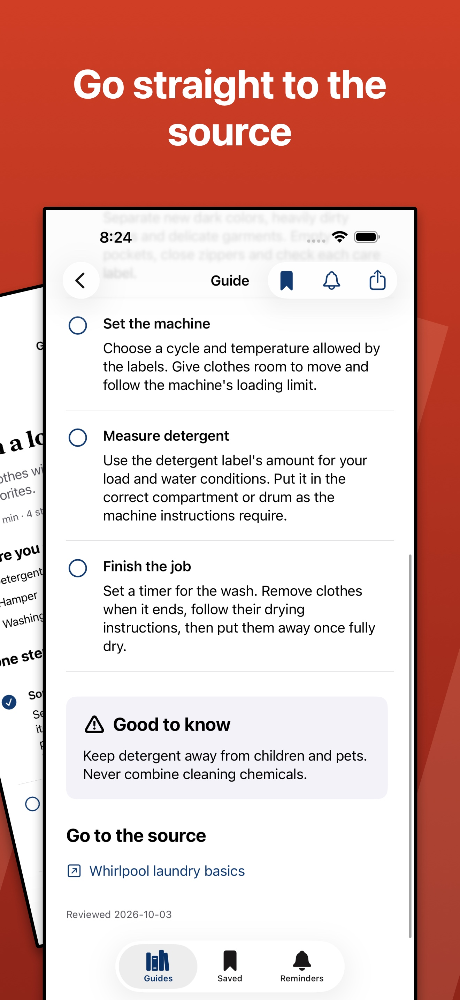
06-original-sources
Go straight to the source
1320 × 2868, 537987 bytes, sRGB
vermilionBookmarks
iphone-6.9-02-guide, iphone-6.9-04-sources
SHA-256 1ca084f6202b9aa4939c50cd4d480f423940ebd1b065b11fe54383aa54b71210
Original native captures
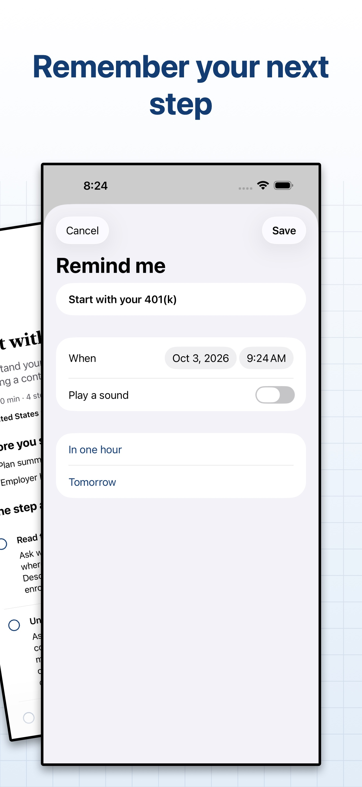
07-reminders
Remember your next step
1320 × 2868, 332016 bytes, sRGB
whiteReferenceGrid
iphone-6.9-09-reminders, iphone-6.9-08-reminder
SHA-256 cae444981c387486ea49a75e5852c746e176697ce08ce76cf74b4a5cf9de83ed
Original native captures
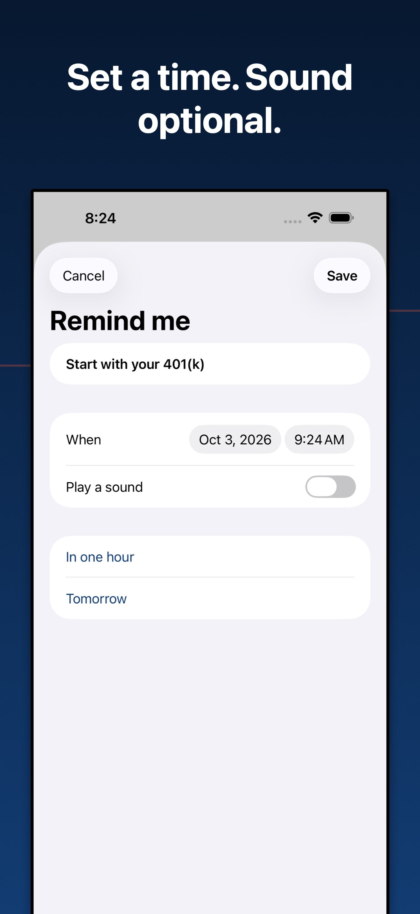
08-optional-sound
Set a time. Sound optional.
1320 × 2868, 258070 bytes, sRGB
navyWayfinding
iphone-6.9-08-reminder
SHA-256 6be06caa16658453a52f92d048acdb536d9ebc72de7d640481eb8822e74572a1
Original native captures
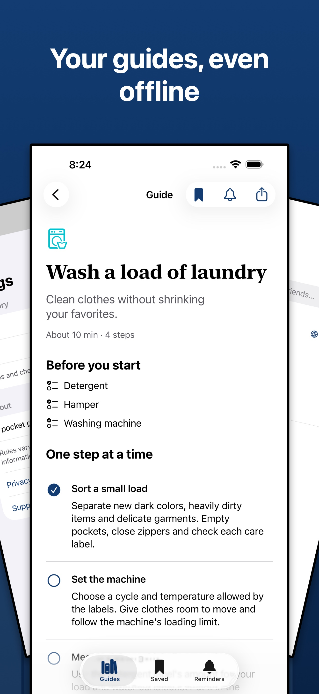
09-offline-guides
Your guides, even offline
1320 × 2868, 478112 bytes, sRGB
marineSpines
iphone-6.9-10-settings, iphone-6.9-05-saved, iphone-6.9-02-guide
SHA-256 e027d3c4eb6267203ae0d27d5f09683087eaad205ab3f4a905372233afc57469
Original native captures
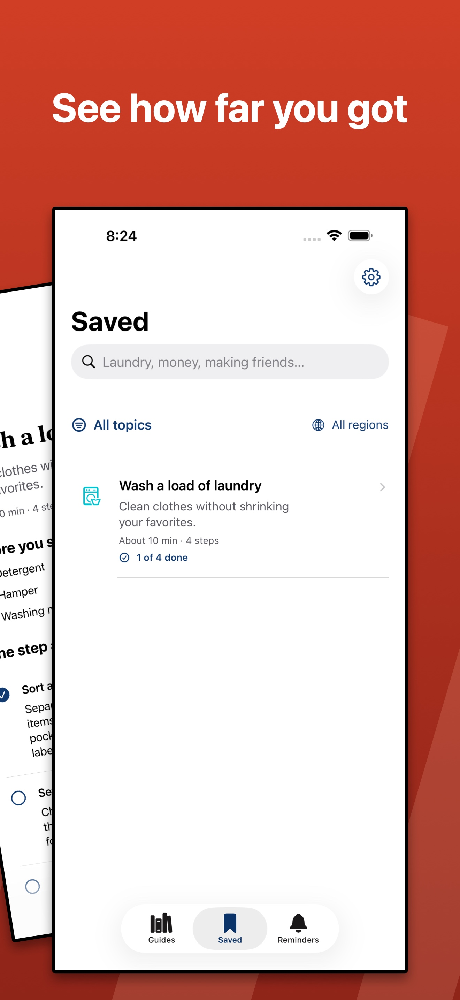
10-progress
See how far you got
1320 × 2868, 321607 bytes, sRGB
vermilionBookmarks
iphone-6.9-03-steps, iphone-6.9-05-saved
SHA-256 36040c3503181593decb3f2669d0e461429d9c5970113d87e7c40a35067edd57
Original native captures
ipad-13
Open contact sheet
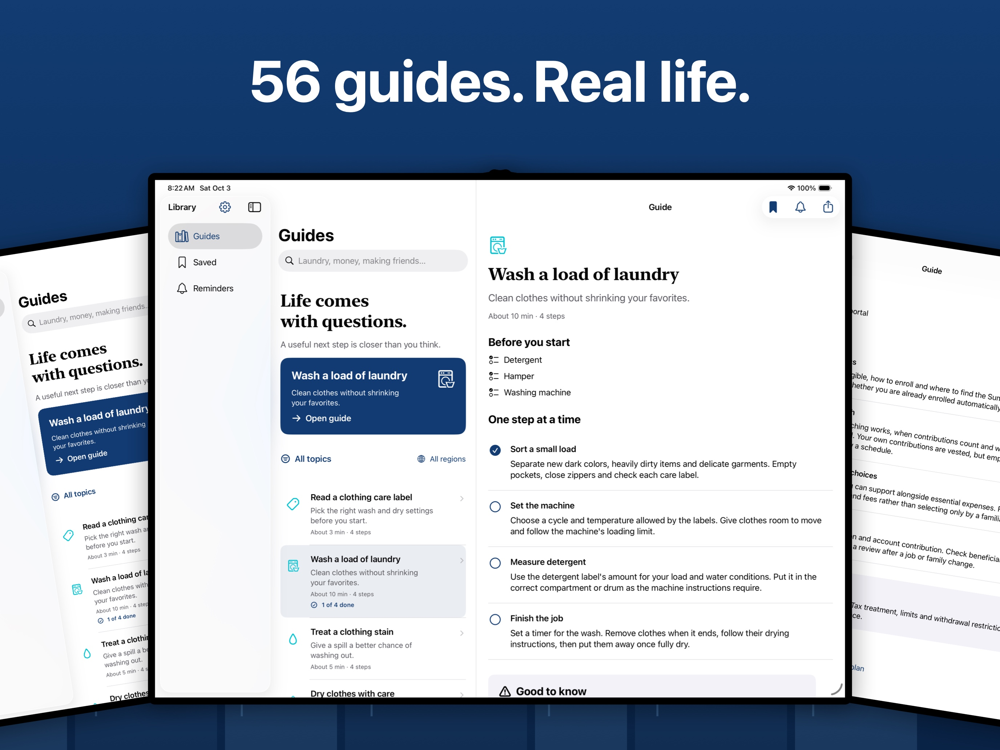
01-practical-guides
56 guides. Real life.
2752 × 2064, 745524 bytes, sRGB
marineSpines
ipad-13-01-guides, ipad-13-07-money, ipad-13-02-guide
SHA-256 d415457c9edd91beed9b5567472c7d93308373c43c9b70806d961daf607998c5
Original native captures
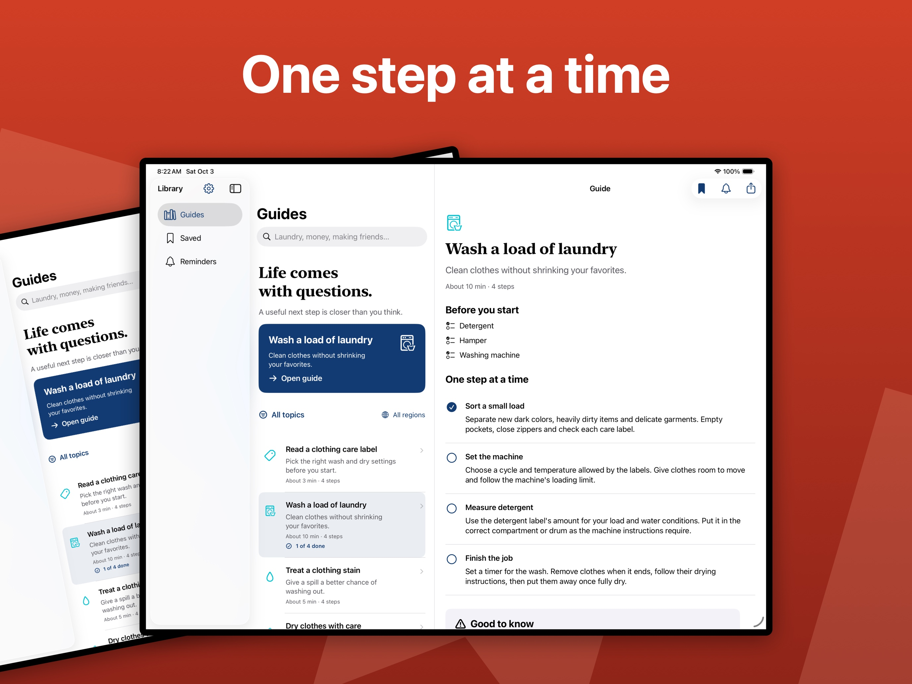
02-clear-steps
One step at a time
2752 × 2064, 712694 bytes, sRGB
vermilionBookmarks
ipad-13-02-guide, ipad-13-03-steps
SHA-256 3125f95d879235f41a59f6314ec94751c1dfc5a1a77abf935040d2fbc2411c0e
Original native captures
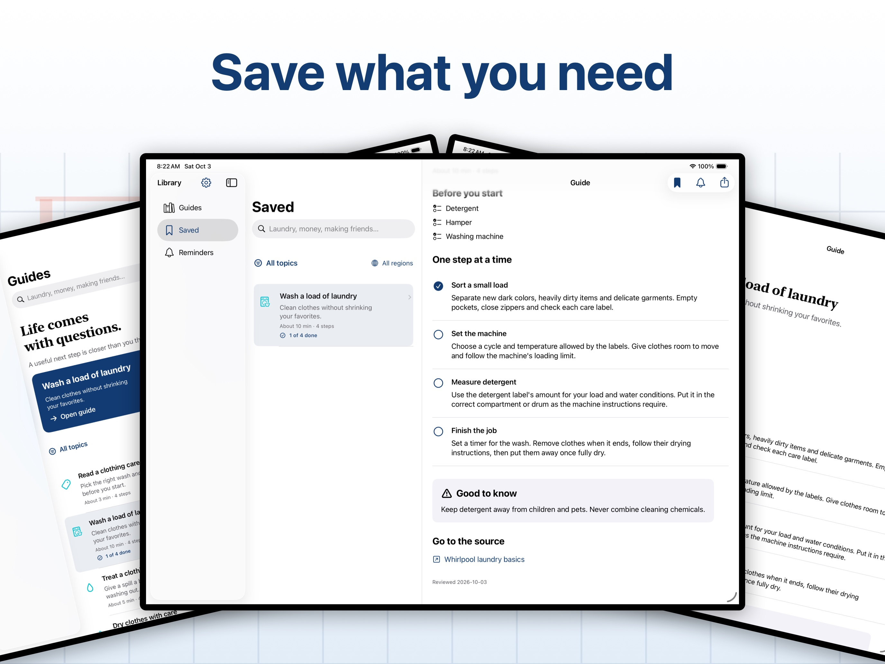
03-saved-guides
Save what you need
2752 × 2064, 707374 bytes, sRGB
whiteReferenceGrid
ipad-13-03-steps, ipad-13-02-guide, ipad-13-05-saved
SHA-256 4553a1c6785b8dcb552a32c5a197d2554a760ff2280560ff1895466215409ca2
Original native captures
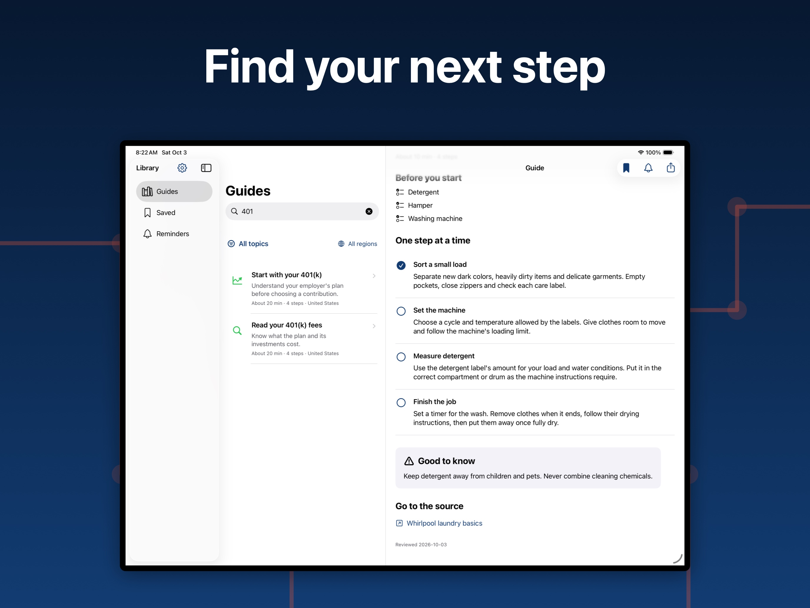
04-search
Find your next step
2752 × 2064, 512553 bytes, sRGB
navyWayfinding
ipad-13-06-search
SHA-256 0c98eb26c36adea0f935aae171bcab13e07f5791774beb6ab1eca3fa447d347f
Original native captures
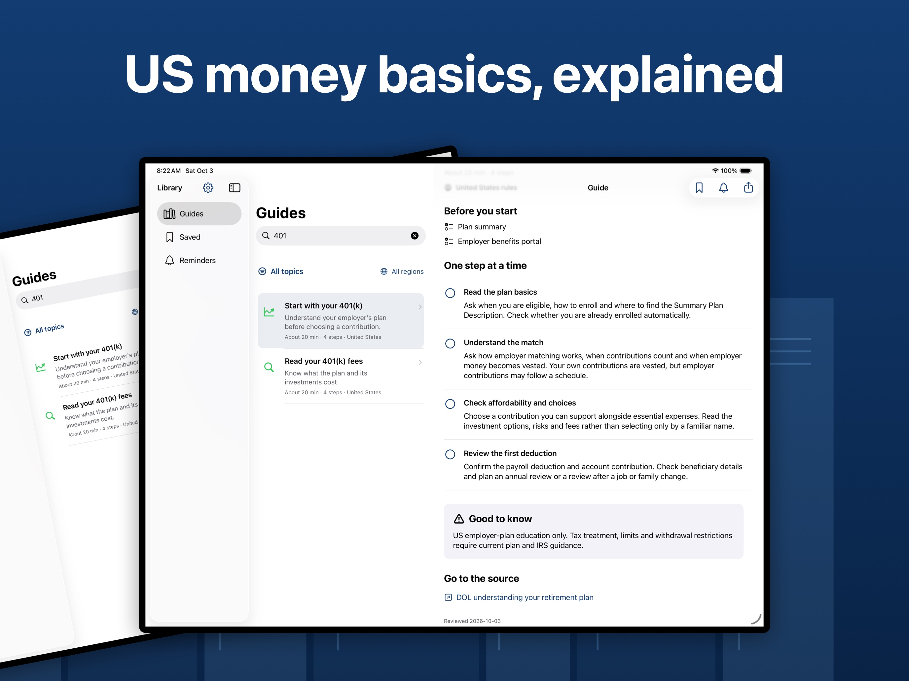
05-us-money
US money basics, explained
2752 × 2064, 643921 bytes, sRGB
marineSpines
ipad-13-06-search, ipad-13-07-money
SHA-256 d071250a4ced059bc89a90dba3e9276eb6d1da10edaabc127341406cc067cb02
Original native captures
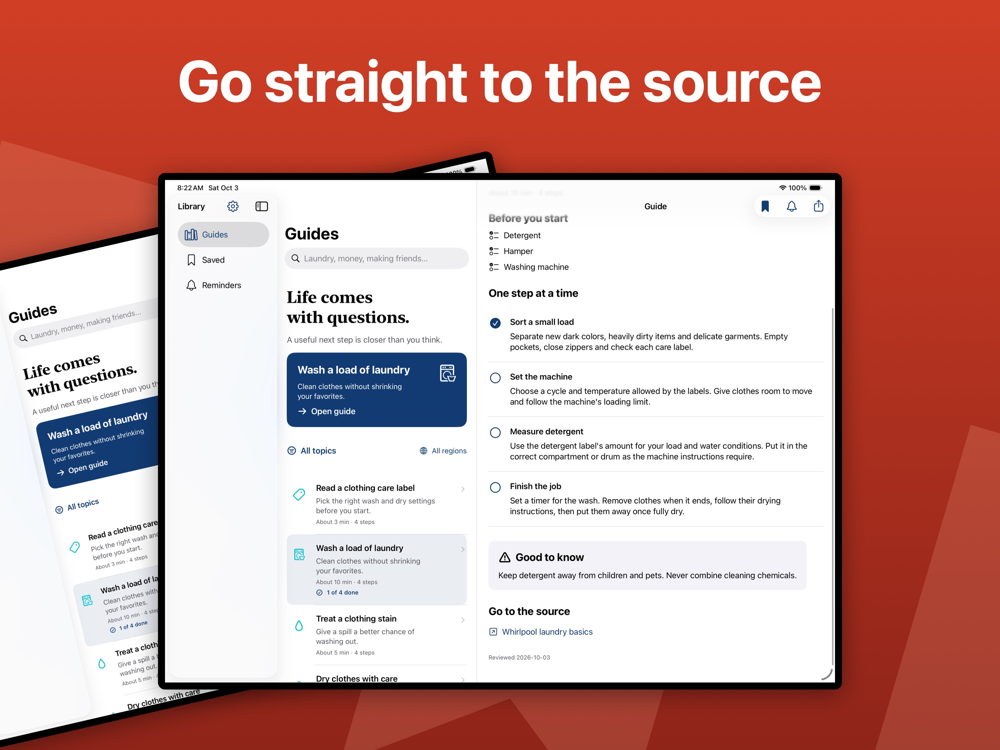
06-original-sources
Go straight to the source
2752 × 2064, 731715 bytes, sRGB
vermilionBookmarks
ipad-13-02-guide, ipad-13-04-sources
SHA-256 c0d1a510d629669caaa4779df8a520f8fc47a3ce09e81052a0544b17dad30d67
Original native captures
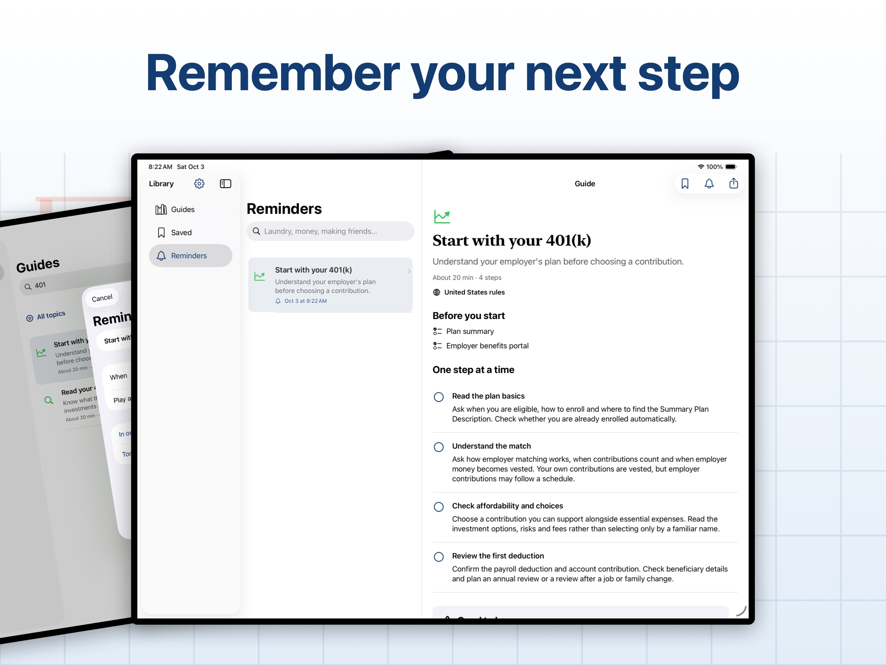
07-reminders
Remember your next step
2752 × 2064, 602496 bytes, sRGB
whiteReferenceGrid
ipad-13-08-reminder, ipad-13-09-reminders
SHA-256 561dbf44c04fe73ee11eea6f82bdd4a2f85bc9634a5631c668b5670fab048ffa
Original native captures
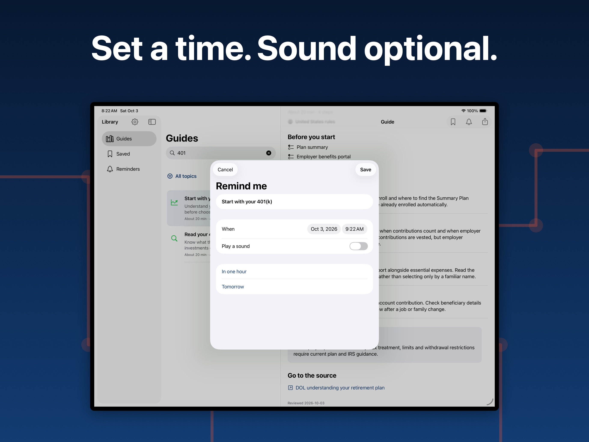
08-optional-sound
Set a time. Sound optional.
2752 × 2064, 506776 bytes, sRGB
navyWayfinding
ipad-13-08-reminder
SHA-256 335047f18f2ce8d09cf38b9c230d20e960f8d2888106485476dd2d020c8e4505
Original native captures
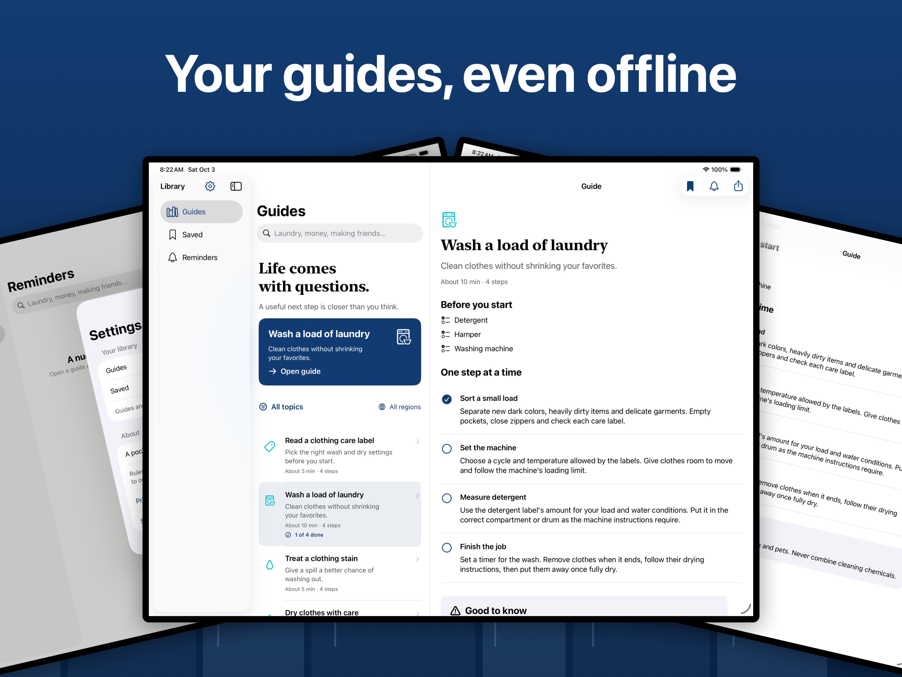
09-offline-guides
Your guides, even offline
2752 × 2064, 726568 bytes, sRGB
marineSpines
ipad-13-10-settings, ipad-13-05-saved, ipad-13-02-guide
SHA-256 76e987c76e86b2ff6bb572d02dcec79a7e40e78d7d7ad2aae4aa9532d8033eb5
Original native captures
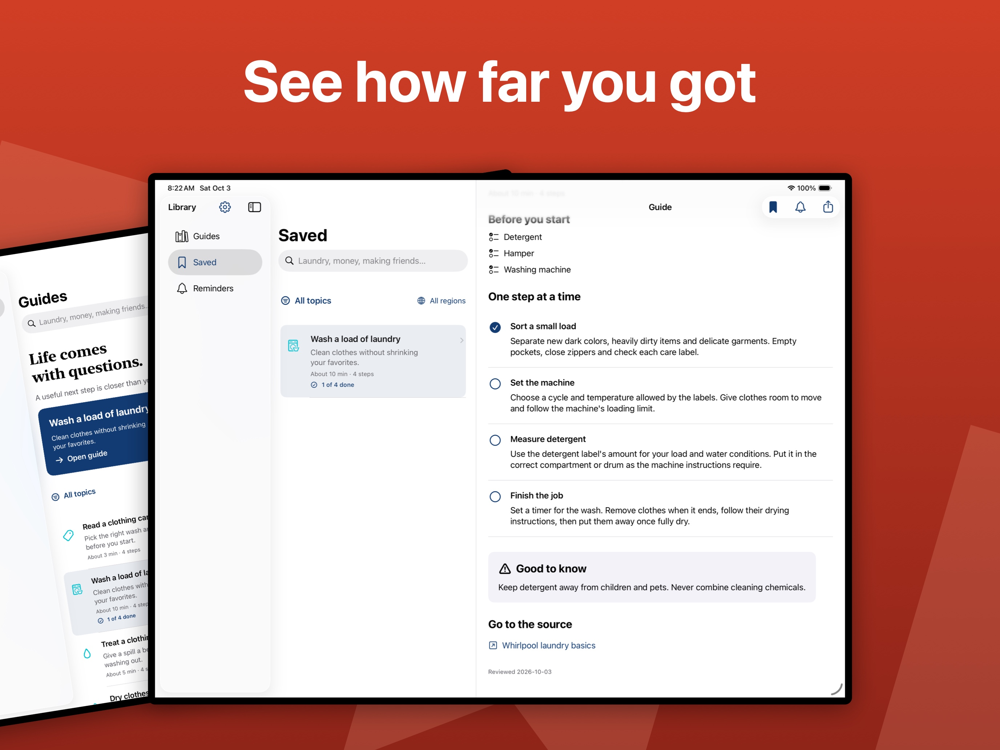
10-progress
See how far you got
2752 × 2064, 604387 bytes, sRGB
vermilionBookmarks
ipad-13-03-steps, ipad-13-05-saved
SHA-256 7608b675856dd0e2653204a424d91adc911ef6a45044bdd6959f0e1bddb2b41f
Original native captures
mac — pending
Genuine native captures are pending. No marketing images have been exported for this platform.